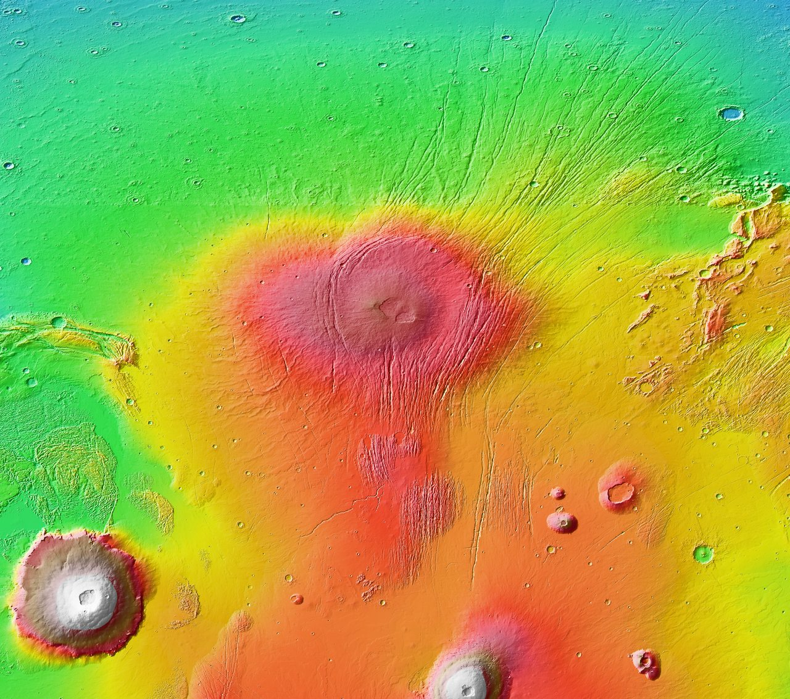

Mars looks like a dead world from the outside. No one has ever watched a lava flow form there, and its giant volcanoes are usually described as extinct. A new study suggests at least one of them may still have something warm going on underneath.
Using the ExoMars Trace Gas Orbiter (TGO), run by the European Space Agency (ESA), an international team led by Alexander Trokhimovskiy of the Space Research Institute of the Russian Academy of Sciences found hydrogen chloride gas collecting over Alba Mons, the Martian volcano that covers the most ground. The results are published in Science Advances.
Wrong place, wrong season
Hydrogen chloride is not new on Mars. TGO's Atmospheric Chemistry Suite first picked it up in results published in 2021, and it turns out to follow a yearly rhythm: it appears across the planet at levels of a few parts per billion when Mars swings closest to the Sun, and nearly vanishes in the colder part of the orbit. Researchers link that seasonal pattern to dust and water in the air, not to volcanoes.
The new detections break that rhythm. They came in early northern summer, when Mars is farthest from the Sun and the gas is normally scarce, and they were confined to the Alba Mons region on the northern edge of the Tharsis volcanic plateau.

When the team pointed TGO's CaSSIS camera at the area, it found fresh-looking fissures less than a metre wide, some running for hundreds of metres, with odd colour changes on the ground around them. On Earth, similar staining forms around fumaroles, where volcanic gases leave minerals behind.
A sleeping magma chamber?
The researchers propose that gas from magma deep below Alba Mons leaks up through these cracks. In winter, when temperatures drop to around minus 120 degrees Celsius, ice may plug them; as the frost disappears in early summer, the pathways reopen. In the paper's own words, the results are best explained by ongoing igneous processes inside Mars. Coverage of the study notes the authors also weighed other options, including mud volcanoes and chlorine-bearing minerals breaking down at the surface.
"Mars has retained enough internal heat to support volcanic activity until recently, and possibly still does" (Daniel Mège, Space Research Centre of the Polish Academy of Sciences, via ScienceDaily)
That fits other recent hints. Instruments on the surface have recorded marsquakes, and some Martian volcanoes appear to have erupted within the last few million years. Mège, co-lead author of the study, has also pointed out that if magma meets buried ice, it could create warm, wet pockets underground, which would make the Alba Mons fissures a sensible place to look for signs of microbial life.
What it does not show
The signal is faint, a matter of parts per billion, and the source may switch on and off. The study does not show that Mars is erupting, that liquid water exists under Alba Mons, or that anything lives there. The team had to rule out ordinary atmospheric chemistry as the cause, and the volcanic explanation remains an interpretation rather than a direct observation of a vent. A firmer answer will need more seasons of monitoring and a search for other volcanic gases, such as sulphur dioxide, which has never been detected on Mars.